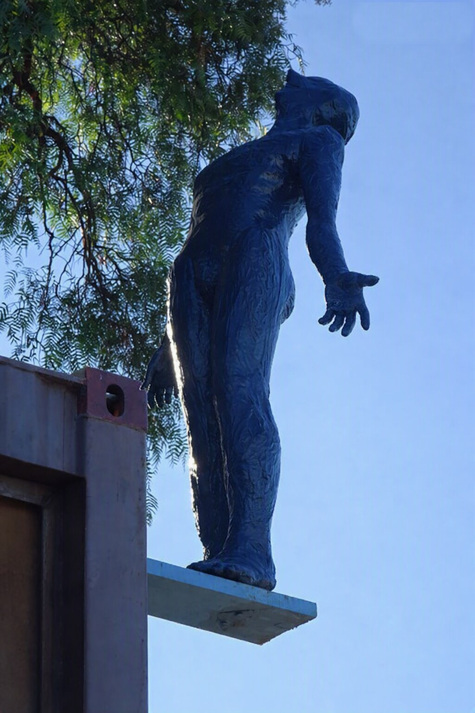
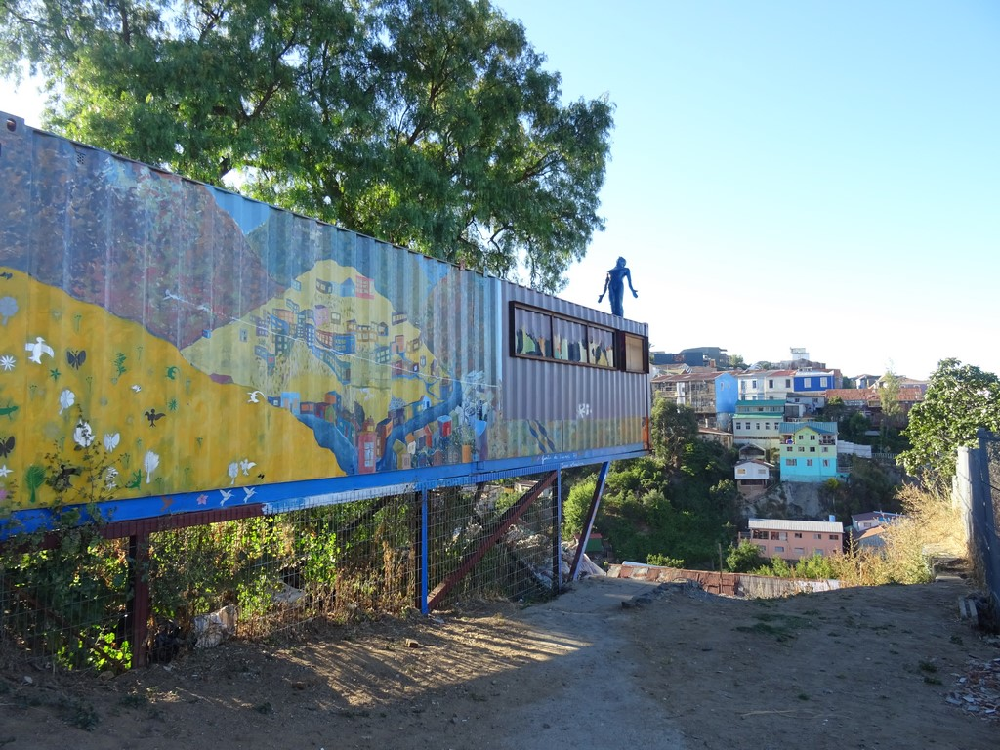
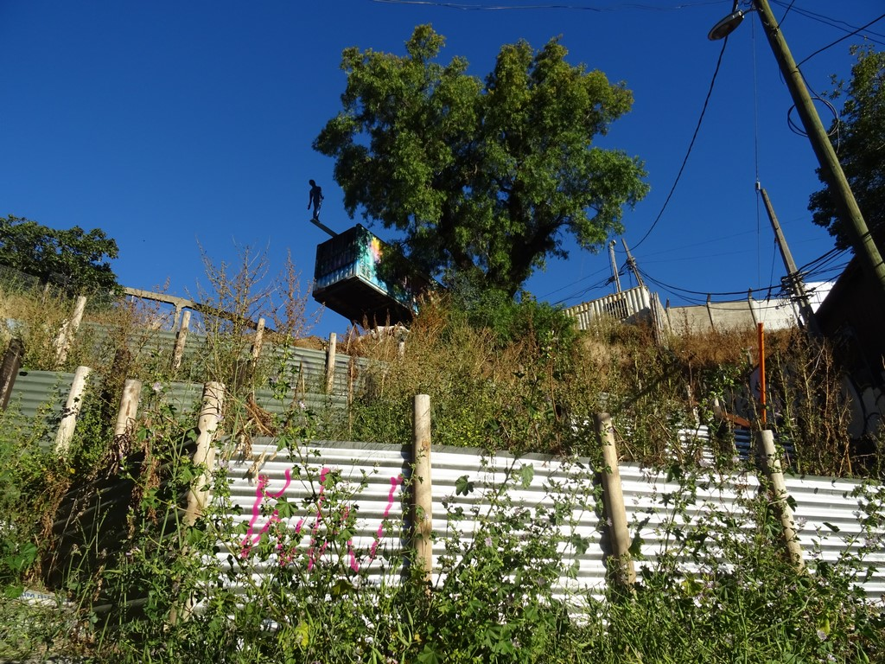
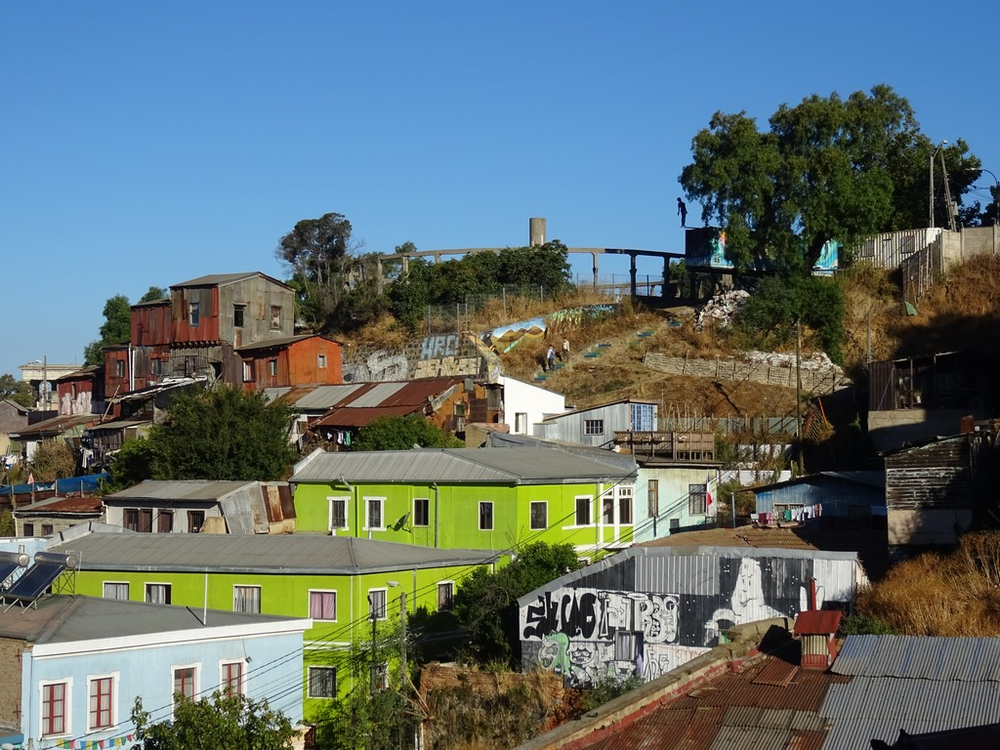

Dossier · El Nadador Nº4
Pieza de Paisaje / El Nadador Nº4
Cuarta pieza de la serie El Nadador, realizada en la sede de la Junta de Vecinos Nº74 del Cerro Cárcel, Valparaíso. Un tablón de madera se proyecta en voladizo sobre la quebrada; en su extremo, una figura de nadador en papel maché, barnizada, queda suspendida en el aire, sobre los techos del cerro.





UbicaciónVALPARAÍSO
33°02′S · 71°37′O